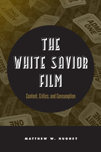

<body bgcolor="#FFFFFF" text="#000000" link="#0000FF" vlink="#CC0000" alink="#CC0000"><center><hr width="350" size="1" align="center" noshade>Surveying the prevalence and popularity of films in which heroic white characters uplift racial others<hr width="350" size="1" align="center" noshade><p><a href="https://cdcshoppingcart.uchicago.edu/Cart/ChicagoBook.aspx?ISBN=9781439910009&&PRESS=temple" target="_top">Buy this book!</a> | <a href="https://cdcshoppingcart.uchicago.edu/Cart/Cart.aspx?PRESS=temple" target="_top">View Cart</a> | <a href="https://cdcshoppingcart.uchicago.edu/Cart/Cart.aspx?PRESS=temple" target="_top">Check Out</a></p><p></p></center><!--none//--><h1>The White Savior Film</h1>
<H2>Content, Critics, and Consumption</H2>
<h3>Matthew W. Hughey</h3>
<P>cloth 1-4399-1000-6 $89.50, Apr 14, <FONT COLOR=#990033>Available</FONT>
<br>paper 1-4399-1001-4 $29.95, Apr 14, <FONT COLOR=#990033>Available</FONT>
<br>Electronic Book 1-4399-1002-2 $29.95 <FONT COLOR=#990033>Available</FONT>
<BR> 230 pp
6x9
12&nbsp;tables 2&nbsp;figures
</P><h3 align="center"><P><font color="#996633">Southwest Sociological Association Outstanding Publication Award,
2016</font></P>
</H3>
<BLOCKQUOTE><I>"In </I>The White Savior Film<I>, Matthew Hughey offers an insightful, thorough and well-written analysis of a key trope in America�s racial formation: cinematic representations of noble saviors�from Sandra Bullock to Kevin Costner�fighting to save Others. This important book offers its readers a timely analysis of how contemporary cinema continues to perpetuate racism by eliding historical specificity."</I>
<br>&#151<b>Daniel Bernardi</b>, author of <I>Star Trek and History: Race-ing toward a White Future</I></I></BLOCKQUOTE>
<P>The cinematic trope of the white savior film-think of Sandra Bullock in <i>The Blind Side</i>, Kevin Costner in <i>Dances with Wolves</i>, or Tom Cruise in <i>The Last Samurai</i>-features messianic characters in unfamiliar or hostile settings discovering something about themselves and their culture in the process of saving members of other races from terrible fates.
<P>In <I>The White Savior Film</I>, Matthew Hughey provides a cogent, multipronged analysis of this subgenre of films to investigate the underpinnings of the Hollywood-constructed images of idealized (and often idealistic) white Americans.
<P>Hughey considers the production, distribution, and consumption of white savior films to show how the dominant messages of sacrifice, suffering, and redemption are perceived by both critics and audiences. Examining the content of fifty films, nearly 3,000 reviews, and interviews with viewer focus groups, he accounts for the popularity of this subgenre and its portrayal of "racial progress."
<P><I>The White Savior Film</I> shows how we as a society create and understand these films and how they reflect the political and cultural contexts of their time.
<BR>&nbsp;<h2>Excerpt</h2><P>Excerpt available at <a href="http://www.temple.edu/tempress">www.temple.edu/tempress</a></p>
<BR>&nbsp;<h2>Reviews</h2>
<p><I>"Hughey proves that the White Savior film is more prevalent and more significant than currently recognized. His examples of the tremendous financial success of recent blockbusters such as </I>Avatar<I>, </I>Lincoln<I>, and </I>Django Unchained<I> place the White Savior genre at the center of popular culture worldwide. Hughey�s tactic�providing a clear window into particular moments of key films�is simple but surprisingly effective. </I>The White Savior Film<I> delivers epiphanies by opening windows on carefully taxonomized groups, and Hughey gives them authority by documenting their statistical, ethnic, class, gender, ideological, and geographical contexts. His contextualizations are all substantial, and the voices shining through are compelling and enlightening."</I><br>&#151<b>J. Ronald Green</b>, Emeritus Professor of Film Studies in the Department of History of Art at the Ohio State University, and author of <I>With a Crooked Stick�The Films of Oscar Micheaux and Straight Lick: The Cinema of Oscar Micheaux</I>
<p><i>"Since the 1980s, Hollywood has released a spate of so-called 'white savior' films, in which heroic white protagonists liberate persons of color from dangerous and decayed environments.... Hughey provides a systematic study of the messages these films convey, as well as how film reviewers and audiences receive them.... The author's analysis is sound, and he ultimately offers a convincing critique of how these movies seek to maintain the racial status quo. VERDICT: Scholars of film, sociology, and cultural studies will find this book particularly illuminating."</i> <br>&#151<b><i>Library Journal</i></b>
<p><i>"[R]ich with qualitative interview data, including individual interviews and focus groups varying in age and racial diversity. Hughey organizes his interview findings into themes and subthemes, making the data easily accessible.... This book would complement an undergraduate or graduate class on race or film, and make good reading for anyone who is interested in these types of films."</I><br>&#151<b><i>Contemporary Sociology</b></i>
<p><i>"Hughey culls the most popular and profitable films of the last 20 years that deal with race in both subtle and overt ways, among them such blockbusters as </i>The Blind Side<i>, </i>The Help<i>, and </i>Gran Torino<i>. These and other films lay the foundation for Hughey's insightful, comprehensive critique of racial paternalism in US cinema and its broader implications in regard to race relations, social policy, and historiography.... [T]he study effectively probes the proliferation of the white savior in the US narrative and challenges filmmakers and audiences alike on the assumption that people of color must be rescued from their own circumstances, forced to assimilate, and managed in order to maintain white dominance. A cogent, well-written, and thoroughly researched book, </i>The White Savior Film<i> will have wide appeal across disciplines and particular interest for those in the humanities and cinema studies. Summing Up: Highly recommended."</i> <br>&#151<b><i> Choice</i></b>
<p><i>"[T]he fact that [Hughey] is examining white savior films as a sociologist rather than as a film critic makes his a distinctive and valuable contribution both to studying cinema and to understanding the ideological formation of race in contemporary American society.... Even if one disagreed with that general diagnosis...it would be difficult to resist the force of the evidence in its favor that is marshaled here. The frames and themes that Hughey infers, both from the films and from responses to them, exemplify the mechanisms through which this ideology is made to function.... admirably comprehensive."</i> <br>&#151<b><i>Social Forces</i></b>
<p><i>"</i>The White Savior Film<i> is an incisive contribution to critical studies of whiteness. In undertaking to outline the genre markers, critical reception, and audience attitudes towards a body of films like </i>Dangerous Minds<i> (1995), </i>Hard Ball<i> (2001), and </i>The Blind Side<i> (2009), Hughey draws attention to the kind of racial common sense that these films construct, reflect, and propagate. </i>The White Savior Film<i> is particularly noteworthy for its methodological rigor and wide scope� [Hughey] presents a compelling case study of a popular and problematic genre� [T]he book is exceptional in its rigor, [and] presents a deeply useful study."</i><br>&#151<b><i>American Studies</i></b>
<BR>&nbsp;<H2>About the Author(s)</H2>
<P><b>Matthew W. Hughey</b> is an Associate Professor of Sociology at the University of Connecticut. He is the author or coauthor of seven books, including <i>White Bound: Nationalists, Antiracists, and the Shared Meanings of Race</i>.</P>
<BR><H2>Subject Categories</H2>
<p><A HREF="/tempress/race.html" TARGET="_top">Race and Ethnicity</a>
<BR><A HREF="/tempress/mass_media.html" TARGET="_top">Mass Media and Communications</a>
<BR><A HREF="/tempress/sociology.html" TARGET="_top">Sociology</a>
</p>
<p align="center"><a href="https://cdcshoppingcart.uchicago.edu/Cart/ChicagoBook.aspx?ISBN=9781439910009&&PRESS=temple" target="_top">Buy this book!</a> | <a href="https://cdcshoppingcart.uchicago.edu/Cart/Cart.aspx?PRESS=temple" target="_top">View Cart</a> | <a href="https://cdcshoppingcart.uchicago.edu/Cart/Cart.aspx?PRESS=temple" target="_top">Check Out</a></p><p><font face="Arial" size="1"><a href="copyright.html" onMouseOver="window.status='Web Copyright Policy';return true;" onMouseOut="window.status=''" title="Web Copyright Policy">&copy;</a> 2016 <a href="http://www.temple.edu" target="new" onMouseOver="window.status='Link to Temple University home page';return true;" onMouseOut="window.status=''" title="Link to Temple University home page">Temple University</a>. All Rights Reserved. http://www.temple.edu/tempress/titles/2263_reg.html</font></p>